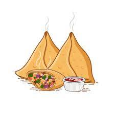

Samosa

Description
A samosa is a fried South Asian pastry with a savory filling, including ingredients such as spiced potatoes, onions, and peas. It may take different forms, including triangular, cone, or half-moon shapes, depending on the region
Ingredients
- Potato
- Onions
- Salt
- Chillies
- Coriander
- Flour
Steps:
- Put a pan on medium flame and add 2 tsp oil in it. Once the oil is hot enough, add cumin seeds and allow them to crackle.
- Add spices and boiled potatoes and cook for a while.
- Prepare the dough for the Samosa.
- Roll the dough in small puris and cut into half.
- Fill the semi-circle with potato filling and deep fry.